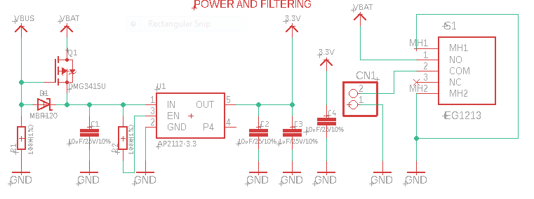
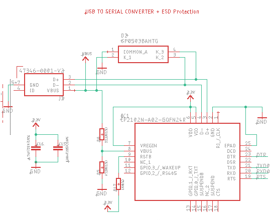
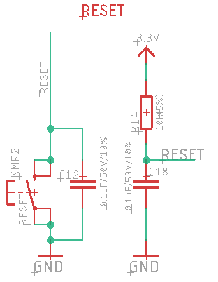

Hardware Design¶
The hardware design is based on the Adafruit HUZZAH32 ES32 feather open source board
- The GliderThrow_Meter design is broken down into seven major sections :
Power supply and filtering,
Lipo charging,
USB to serial converter
MPU6050,
ESP-WROOM-32D & Autoreset
Reset circuit
Adressable LED
Power supply and filtering¶
The board can be powered from a 5V USB port (VBUS), or from a 3,7 V LIPO (or Li-Ion) 1S battery.
The battery is connected to a switch that allows the battery power to be turned ON/OFF.
A DMG3415U (MOSFET transistor) is used to switch between VBUS and VBAT. When VBUS is not present, the gate is pulled low, and the MOSFET shorts out the body diode, connecting VBAT directly to the LDO. When VBUS is greater than VBAT (that is our case), the MOSFET is cut off and the body diode is blocking, disconnecting VBAT from the circuit. EN pin of the DMG3415U is pulled low to permanently to enable the chip.
So with this switch, VBAT enters to the AP2112-3.3v LDO, if VBUS isn’t present, otherwise VBUS enters to the AP2112-3.3.
Lipo charging¶
The lipo charging circuit is based on the MCP73831/2 microship chip. This chip is a miniature single cell, fully integrated Li-Ion, Li-Poly charge management controllers. Typical Application schematic is used.
Note
R8 resistor is used to set the current regulation. As we will used battery around 350 mA, we fix R8 to a current regulation around 200 mA.
USB to serial converter¶
The USB serial converter is based on a CP2102N from Silicon Labs.
MPU6050¶
The circuit for the MPU6050 is a typical application scheme (see datasheet). SDA and SCL pins are connected to the pins 22 & 23 of the ESP-WROOM-32D.
ESP-WROOM-32D & Autoreset¶
ESP-WROOM-32D chip, is the last ESP-WROOM-32 update from expressif. As our board is design with built-in USB to Serial converter, we will you esptool.py to automatically reset the board into bootload mode. esptool.py can automatically enter the bootloader by using the RTS and DTR modem status line to toggle GPIO0 and EN automatically.
EN pin forces the ESP32 chip to reset and the ESP will enter the serial bootloader when GPIO0 is held low on reset. Otherwise it will run the program in flash.
Note
GPIO0 has an internal pullup resistor, so if it is left unconnected then it will pull high.
We use two PDTC114T (an NPN transistor with resistor) to control the ESP32 Boot mode Selection.
We have DTR controlling the base of a transistor whose collector is connected to RESET. We have RTS connected to the base of a transistor whose collector is connected to GPIO0. Remember, there is an external pullup resistor on RESET so default is HIGH.
When DTR is set HIGH and RTS is set LOW, this pulls RESET to LOW and GPIO0 is not controlled so it will eventually take its strapped value of HIGH. This has the same result as assuming DTR connects to GPIO0 and RTS to RESET. The processor is in the reset state.
When DTR is set LOW and RTS set HIGH, this disconnects RESET from the transistor and it gets pulled HIGH by the external pullup resistor. At the same time, GPIO0 is pulled to LOW by the transistor (with its internal pullup still engaged). This has the same result as assuming DTR connects to GPIO0 and RTS to RESET. The processor comes out of reset state and reads the GPIO0 value to be LOW to start the bootloader.
Battery voltage is measure using a a voltage divider bridge connected to the IO35 pin.
Most of the other pin are not used, unlike IO22 & IO23, set respectively on SCL and SDA I2C signal to communicate with the MPU6050.
Reset circuit¶
Enable (EN) is the 3.3V regulator’s enable pin. It’s pulled up, so connect to ground to disable the 3.3V regulator. So we connect this pin a pushbutton to restart your ESP32.
As recommended by espressif a 1uF value capacitor is added between EN pin and GND to make automatic reset more reliable.
Adressable LED¶
The adressable led is connected to the pin IO13 of the ESP-WROOM-32D. This led is used to display the status of the MPU6050 calibration.
PCB routing¶
The routed PCB (without ground plan) is shown below. The routing was done under EAGLE.

3D made with fusion 360 is shown below.